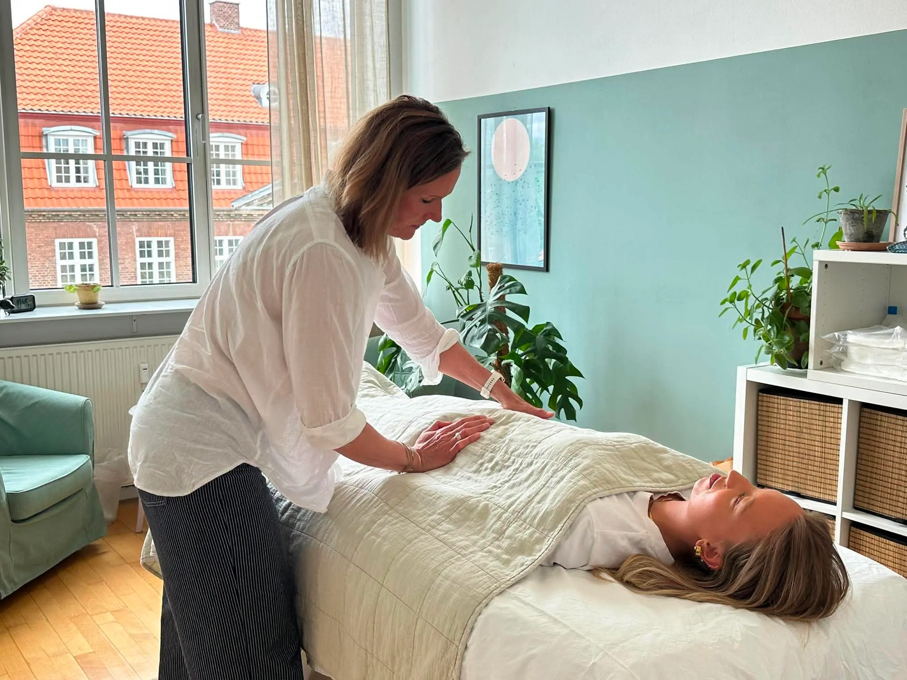

Min historie
Jeg mødte Manuvision på et tidspunkt hvor mit liv var ved at tage
en drejning. Efter mange år i det der på mange måder lignede
drømmejobbet, måtte jeg erkende, at jeg ikke havde hjertet med i
mit arbejde. Jeg stod pludselig et sted, hvor jeg kunne mærke jeg
havde brug for at finde mening. Mening med både mit arbejdsliv og
måske også mening med selve livet. Det var nødvendigt at skifte
retning for ikke at miste mig selv. Både karrieremæssigt og
personligt søgte jeg derfor efter en hverdag, med dybere mening og
mere plads til både krop, sind og sjæl - plads til hele mig.
En voksende interesse for kroppen, en nysgerrighed på samspillet
mellem det fysiske og det mentale, fik mig i retning af
Manuvision. En retning hvor jeg lytter til kroppen, passer bedre
på mig selv og samtidig kan hjælpe og inspirerer andre.
Jeg startede min kropsterapi uddannelse i januar 2017. Jeg kom hurtigt i gang med at give elevbehandlinger og fik stille og roligt bygget et netværk og en erfaring op. I sommeren 2018 blev jeg selvstændig og de klienter jeg ser på min briks, er alle mulige forskellige slags mennesker. Og alle med hver deres unikke historie. Siden har jeg taget div. masterclass kurser inden for kropsterapien og har i sommeren 2022 også færdiggjort Manuvisionsoverbygning som chok- & traume terapeut.

Jeg hjælper mennesker som søger hjælp til alt fra; smerter i nakke,
skuldre, ryg, lænd, iskias, myoser osv. til angst, depression,
stress & PTSD. Derudover oplever jeg også at mange af mine klienter,
har et dybt ønske om øget selvindsigt, større kontakt med krop og
åndedræt, og som helt enkelt bare gerne vil opnå en øget kropslig
forståelse og øget velvære.
Som behandler vil jeg hjælpe dig med at forstå dine krops signaler,
og med at være mere nysgerrig på årsager og sammenhænge. Når du på
briksen mærker ind i årsager og sammenhængene, så lærer du også
dig selv bedre at kende. Dette gør vi sammen ved at skabe kontakt
til -og skabe større bevidsthed om dine grænser og dine behov. Et
samarbejde, hvor du oplever forandringer, velvære og indsigt.
Min uddannelse
Jeg har behandlet siden 2017, blev færdiguddannet i december
2018 og tog overbygningen til Manuvision chok & traume terapeut i
2022.
- Eksamineret, certificeret og RAB-godkendt Manuvision kropsterapeut. Færdiguddannet i 2018
- DAKOBE-registreret.
- 300 timers anatomi, fysiologi og sygdomslære gennemført hos Innowell i sommeren 2017
- 120 timers efteruddannelse til chok & traumeterapeut hos Manuvision, bestået i juni 2022
-
Relevante kurser:
- Kommunikation i praksis hos Stig Sølvhøj
- Positiv psykologi, AT Work skolen
- Masterclass i hjernerystelse, Manuvision
- Masterclass i nakke og ryg, Manuvision
- Antroposofisk medicin & biologisk psykologi v. Karsten Munk Akademiet
- Speciale i tilknytningsmønstre v. nervesystemsekspert og psykoterapeut Anne Marie Clement
DAKOBE & RAB
Jeg er medlem af DANMARKS KOMPLEMENTÆRE BEHANDLERE (DAKOBE) og er
RAB godkendt Manuvision Kropsterapeut.
RAB betyder Registreret Alternativ Behandler og er din garanti
for, at jeg som terapeut, lever op til styrelsen for
patientsikkerheds strenge krav til uddannelse, faglighed, etik
samt krav om løbende videreuddannelse. Jeg har udover min
uddannelse til Manuvision kropsterapeut, gennemgået og bestået
eksamen i 200 timere anatomi & fysiologi, samt 100 timere
sygdomslære. Derudover modtager jeg yderligere årligt min. 14
timers relevant efteruddannelse inden for mit fag.
At jeg er medlem af DAKOBE betyder bl.a, at jeg har en
erhvervsansvarsforsikring, som dækker hvis jeg skulle forvolde
skade på dig eller skader som du som klient måtte pådrage dig i
min klinik.
Formålet med registrerings- ordningen er,
at give dig som klient af alternativ behandling, en bedre mulighed
for at kunne identificere alternativ behandling. Der stilles en
række faglige og uddannelsesmæssige krav til RAB registrerede
behandlere, idet de registrerede alternative behandlere får eneret
til at benytte titlen registreret alternativ behandler (RAB) .
Kravene er stillet af den brancheforening, som den alternative
behandler er registreret i, idet der i lovgivningen bl.a. er
stillet minimumskrav vedrørende den uddannelsesmæssige baggrund og
foreningens regler for god klinisk praksis.